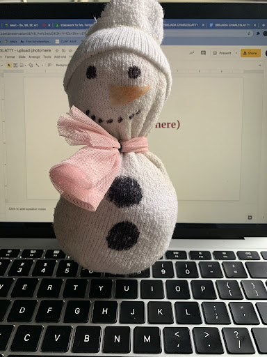
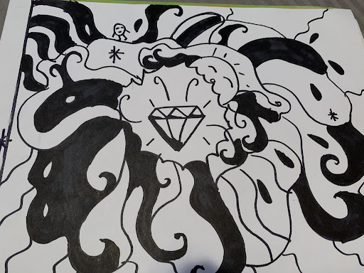
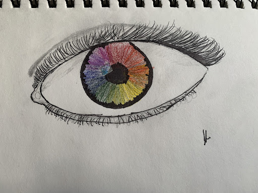
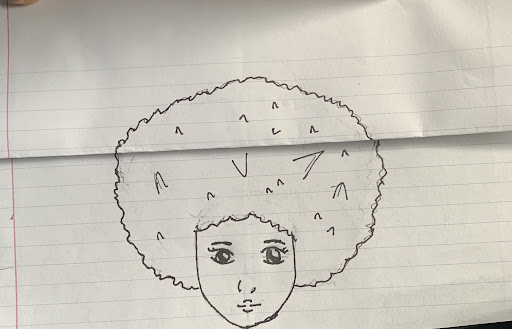
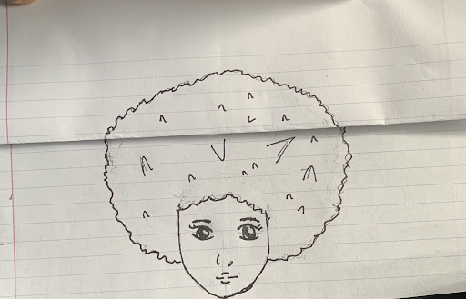
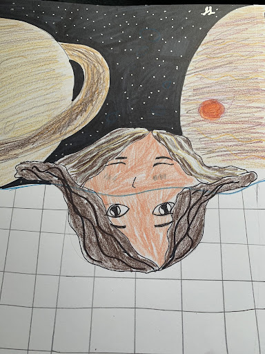
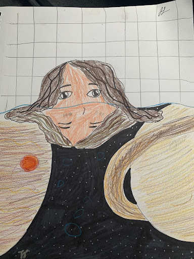

This is a gif that i made using Brush Ninja. It represnts the changing seasons and cycle of the seasons. It starts off with a beatful field of flowers that gets destroyed by a tornado and rain but then at the end a flower grows so it shows how after bad things good things will come. This was one of my favorite things to make and it was actually kind of hard at first but i obviously eventually got the hang of it.
This is a sock snowman that i made from my fathers sock. It was pretty hard to do at first.. alot of socks were sacrificed but it came out cute anyways.
This is some abstract art that i made. Honestly i didnt know what to do so I drew a whole bunch of doodles and its in black and white because I had no color penicils at the time. But i think the black and white made it look better anyways.
This is a rainbow eyeball that i drew out of bordom. Not my best work. But I got the inspiration from a comic I was reading at the time which was about a girl who had grey eyes in a world where your eye color dictated your life or success in life and she fell in love wiht a guy who had rainbow eyes meaning he was like the ultimate succcessfull guy. Pretty cheesy but his eyes were cool so I drew it.
 

This is what they call hidden art. I used an afro because that was and still is one of my lazy go to hairstyles and i literally didnt know what else to use. So basically when its folded its a girl with a noraml afro but then when you opne it you see her hair is a monster. so dont judge a book by its cover.
One of my favorite things to draw. This piece was an entire accident. i didnt know what to do and was definetly confused witht the assignment because i was not used used to these surrealist art pieces. But it came out so good. And im obssed with space so I incorporated that into it.